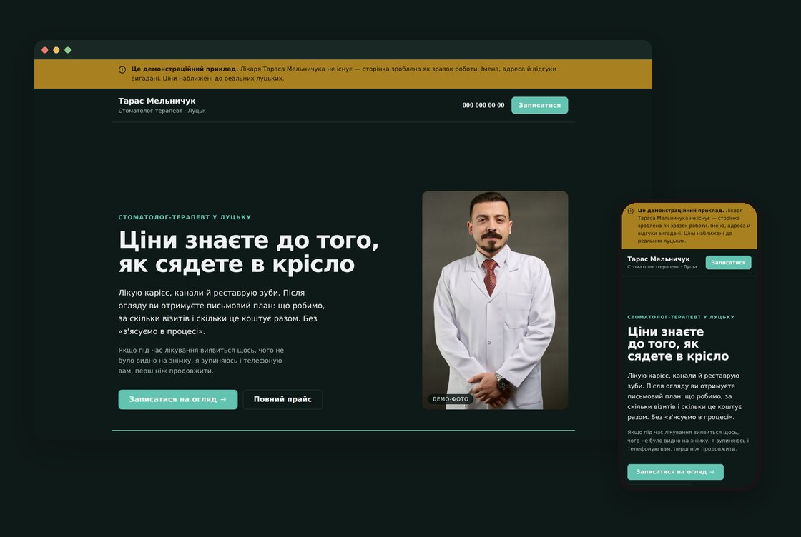
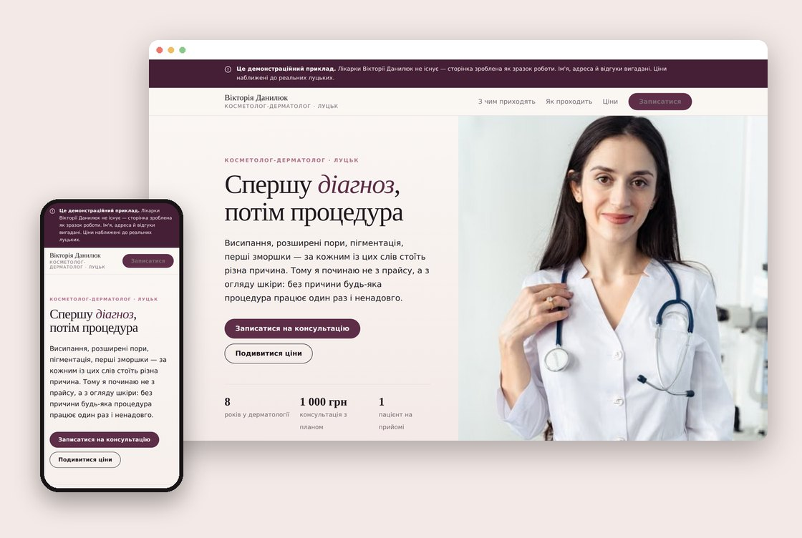
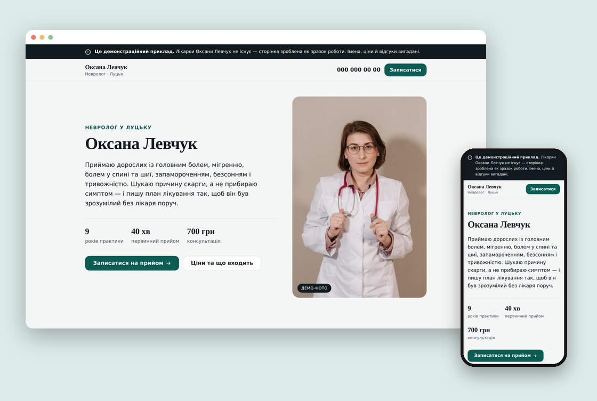
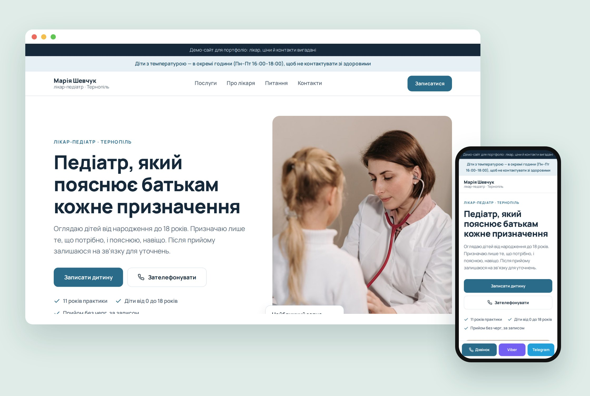

01
Пацієнт гуглить ваше ім'я
Вас порадили — людина шукає ім'я в Google. Не знаходить нічого й іде до того, у кого сайт є.
Пацієнт бачить ваші послуги, ціни й відгуки — і записується одразу, замість того щоб гортати стрічку й чекати відповіді в директі.
Домен і доступи оформлюються на вас — сайт лишається вашою власністю.
Роботи
Один шаблон усім не підходить. Натисніть на зображення, щоб відкрити сайт.


Косметологія та дерматологіяСторінка на фотографіях: кабінет, процедура, шкіра крупно. Тепла палітра замість звичної медичної бірюзи.
Відкрити сайт →
НеврологіяСкарги на першому екрані, відкриті ціни й блок «до мене звертаються, якщо» — мовою пацієнта, а не регаліями лікаря.
Відкрити сайт →
Це демонстраційні сайти для вигаданих лікарів, із реальними ринковими цінами. Відкривайте з телефона — більшість пацієнтів дивиться саме так.
Ціна
Ціна названа до старту й не змінюється в процесі. Без «це виявилось складніше» на етапі здачі.
Передоплата 50% до старту, решта — до передачі доступів.
Домен і робоча пошта оплачуються окремо, за тарифами реєстратора, і оформлюються на вас.
Процес
01
Дванадцять питань про вашу практику. Приблизно 15 хвилин вашого часу.
02
Три робочі дні від передоплати. Присилаю посилання, ви дивитесь із телефона.
03
Збираєте побажання одним списком — вношу їх разом.
04
Сайт і домен переходять до вас. Далі ви ні від кого не залежите.
Хто робить
Ви маєте знати, з ким матимете справу, перш ніж писати незнайомій людині про свій сайт.
Я обрав лікарів як напрям, бо задача в них однакова: показати послуги, ціни й спосіб записатись.
Коли робиш одне й те саме, починаєш бачити, які блоки справді доводять пацієнта до запису, а які просто займають місце. Звідси три дні, а не місяць.
Ви пишете напряму виконавцю: без менеджерів і без «уточню в команди». Хто відповідає — той і робить.
Якщо після брифу стане зрозуміло, що сайт вам зараз не потрібен, скажу прямо. Продавати те, що не спрацює, невигідно нам обом.
Контакт
Напишіть у двох реченнях, чим займаєтесь — відповім, що саме має бути на вашому сайті. Безкоштовно й ні до чого не зобов'язує.